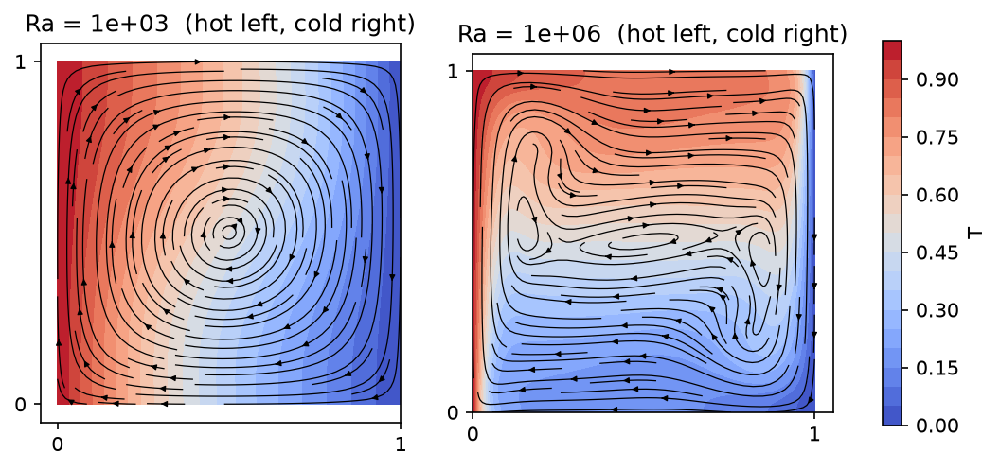
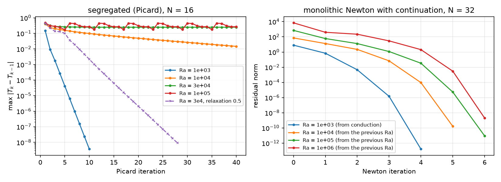
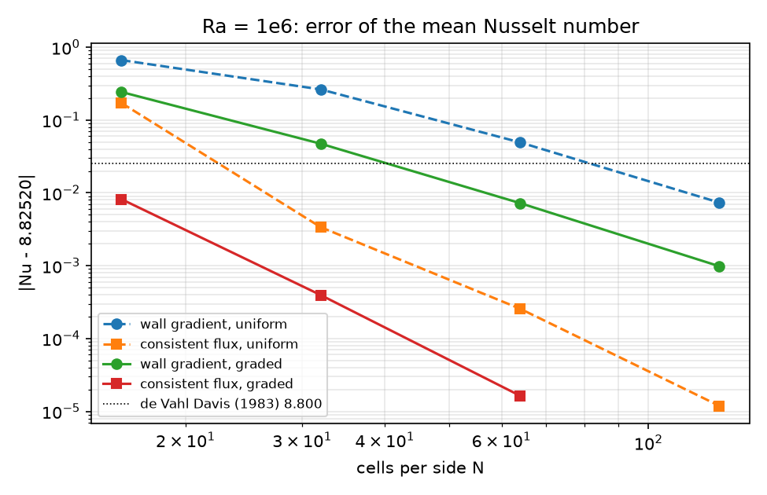
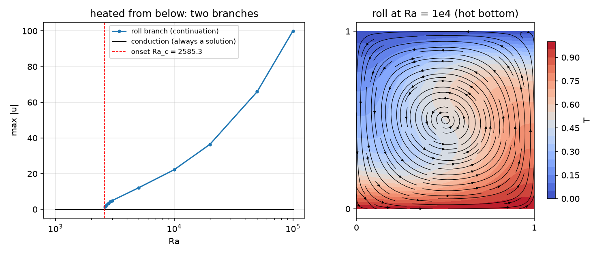

Week 11 — Natural Convection: Boussinesq Flow, Mixed (\mathbf u,p,T), Newton with Rayleigh-Number Continuation
Process Systems Laboratory
Department of Chemical and Biomolecular Engineering, SeoulTech
| Part | Topic | Time |
|---|---|---|
| Quiz on Week 10 (closed-AI) | 10 min | |
| A | Boussinesq flow — scalings, Ra, Pr, the benchmark, boundary layers | 25 min |
| B | One mixed space for (\mathbf u,p,T) — Newton, continuation, Picard | 35 min |
| C | Verification — MMS, the Nusselt number two ways, the benchmark’s accuracy | 35 min |
| D | Heated from below: two branches, the onset · LLM pitfalls · HW10 | 25 min |
Lab: W11_lab.ipynb (≈ 80 min) · Homework: W11_HW10.ipynb (due before Week 12) · Applications: cooling of reactors and tanks, crystal-growth melts, electrochemical cells, buoyant packed beds (AMPS I topic C: a segregated Brinkman–Boussinesq model — this week the monolithic alternative)
Density varies only through temperature, and only where it multiplies gravity (\beta\Delta T\ll1):
\rho_0(\mathbf u\cdot\nabla)\mathbf u=-\nabla p+\mu\Delta\mathbf u+\rho_0 g\beta(T-T_0)\,\mathbf e_y,\qquad\nabla\cdot\mathbf u=0,\qquad\mathbf u\cdot\nabla T=\kappa\Delta T .
Two-way coupling: buoyancy drives the flow, the flow carries the heat. Two parameters after scaling (L, \Delta T):
Ra=\frac{g\beta\Delta T L^3}{\nu\kappa}\ \ \text{(buoyancy vs. diffusion)},\qquad Pr=\frac{\nu}{\kappa}\ \ \text{(0.71 for air)}.
The de Vahl Davis cavity: unit square, T=1 on the left wall, T=0 on the right, top and bottom adiabatic, no slip everywhere; steady, Ra=10^3\dots10^6, Pr=0.71.
| velocity scale U | momentum | energy | velocity values |
|---|---|---|---|
| \kappa/L (thermal) | (\mathbf u\cdot\nabla)\mathbf u=-\nabla p+Pr\,\Delta\mathbf u+Pr\,Ra\,T\mathbf e_y | \mathbf u\cdot\nabla T=\Delta T | \mathbf u_\kappa — the benchmark’s unit |
| \nu/L (viscous) | (\mathbf u\cdot\nabla)\mathbf u=-\nabla p+\Delta\mathbf u+\frac{Ra}{Pr}T\mathbf e_y | \mathbf u\cdot\nabla T=\frac1{Pr}\Delta T | \mathbf u_\nu=\mathbf u_\kappa/Pr |
The Nusselt number Nu=\frac{1}{H}\int_\text{hot}-\partial_xT\,ds (mean wall heat flux / conductive flux) does not depend on U; velocities do. This week: \kappa/L, as the benchmark.

Find (\mathbf u,p,T)\in\mathbf V_h\times Q_h\times S_h (P2/P1 Taylor–Hood + P2) with \mathbf u=0, T=T_D on the walls, p(0,0)=0:
\int_\Omega\big[(\nabla\mathbf u\,\mathbf u)\cdot\mathbf v+Pr\,\nabla\mathbf u:\nabla\mathbf v-p\,\nabla\cdot\mathbf v-q\,\nabla\cdot\mathbf u-Pr\,Ra\,T\,v_y+(\mathbf u\cdot\nabla T)\,s+\nabla T\cdot\nabla s\big]\,dx=0 .
| Math | Code |
|---|---|
| \mathbf V_h\times Q_h\times S_h | basix.ufl.mixed_element([element("Lagrange", c, 2, shape=(2,)), element("Lagrange", c, 1), element("Lagrange", c, 2)]) |
| (\mathbf u,p,T), tests | u, p, T = ufl.split(w); v, q, s = ufl.TestFunctions(W) |
| (\nabla\mathbf u\,\mathbf u)\cdot\mathbf v | ufl.inner(ufl.grad(u) * u, v) |
| boundary data on one field | V, _ = W.sub(0).collapse(); dirichletbc(f, locate_dofs_topological((W.sub(0), V), 1, facets), W.sub(0)) |
| p(0,0)=0 | locate_dofs_geometrical((W.sub(1), Q), lambda x: isclose(x[0], 0) & isclose(x[1], 0)) |
| Newton | NonlinearProblem(F, w, bcs=bcs, petsc_options_prefix=..., petsc_options={"snes_type": "newtonls", ...}) |
| Ra as a parameter | Ra = fem.Constant(msh, 1e3); Ra.value = 1e4 — no re-compilation |
| residual history | solver.setConvergenceHistory(), solver.getConvergenceHistory() |
Newton converges only from inside its basin. At high Ra the conduction state is far from a solution with thin layers. Direct starts against continuation (graded N=32; SNES reason, iterations):
| start | line search | Ra=10^4 | 10^5 | 10^6 |
|---|---|---|---|---|
| conduction | none | ✓ 7 | −9 (diverged) | −9 |
| \mathbf w=0 | none | ✓ 7 | ✓ 11 | −9 |
| conduction | bt |
✓ 6 | ✓ 23 | −6 or −5, Nu=4.135 |
| \mathbf w=0 | bt |
✓ 7 | ✓ 10 | ✓ 13 |
| continuation 10^3\to10^4\to10^5\to10^6 | none | ✓ 5 | ✓ 6 | ✓ 6 |
Which direct start works is luck — and a failed solve with a line search leaves a plausible state (Nu=4.135 instead of 8.825). Continuation: every start inside the basin, the whole Ra dependence for free. Check the reason after every solve.

\mathbf u=5\,\mathrm{curl}(\sin^2\pi x\sin^2\pi y), p=\cos\pi x\sin\pi y, T=1-x+0.2\sin\pi x\cos\pi y; sources from UFL (div(grad(.)) of the exact fields), Dirichlet data everywhere, Ra=10^3.
| N | \Vert e_\mathbf u\Vert | \vert e_\mathbf u\vert_1 | \Vert e_p\Vert | \Vert e_T\Vert | \vert e_T\vert_1 |
|---|---|---|---|---|---|
| 8 | 5.3e-2 | 3.1 | 0.33 | 2.0e-4 | 6.8e-3 |
| 64 | 1.0e-4 | 5.0e-2 | 1.4e-4 | 2.2e-7 | 1.1e-4 |
| order (last) | 3.00 | 2.00 | 3.42 → 2 | 3.09 | 2.00 |
The coupling costs no order; Newton solves the discrete problem in 5 iterations. Pressure and T are pre-asymptotic (faster than guaranteed) on coarse meshes — HW10 Q2.
Wall gradient: Nu=\frac1H\int_\text{hot}-\partial_xT_h\,ds — a derivative of T_h, where the layer is steepest.
Consistent flux: test the weak energy equation with z_h = 1 at the hot-wall nodes, 0 elsewhere: Nu=\frac1H\int_\Omega(\mathbf u_h\cdot\nabla T_h\,z_h+\nabla T_h\cdot\nabla z_h)\,dx (equal for the exact solution — HW10 Q1).
The flux is a functional of the discrete solution evaluated through the weak form — no pointwise derivative on the boundary. nusselt() and nusselt_flux() in the module.

At Ra=10^6:
| N | gradient, uniform | gradient, graded | flux, uniform | flux, graded |
|---|---|---|---|---|
| 16 | 9.490 | 9.068 | 8.654 | 8.817 |
| 32 | 9.088 | 8.872 | 8.8218 | 8.8248 |
| 64 | 8.875 | 8.832 | 8.8249 | 8.82518 |
| 128 | 8.833 | 8.826 | 8.82519 | 8.82520 |
| Ra | Nu (1983) | Nu, N=128 | u_{\max} at y (1983) | u_{\max} at y, N=128 | v_{\max} at x (1983) | v_{\max} at x, N=128 |
|---|---|---|---|---|---|---|
| 10^3 | 1.118 | 1.11779 | 3.649, 0.813 | 3.6494, 0.813 | 3.697, 0.178 | 3.697, 0.178 |
| 10^4 | 2.243 | 2.24482 | 16.178, 0.823 | 16.183, 0.823 | 19.617, 0.119 | 19.628, 0.119 |
| 10^5 | 4.519 | 4.52164 | 34.73, 0.855 | 34.741, 0.855 | 68.59, 0.066 | 68.64, 0.066 |
| 10^6 | 8.800 | 8.82520 | 64.63, 0.850 | 64.834, 0.850 | 219.36, 0.0379 | 220.6, 0.038 |
The 1983 values are extrapolated from coarse finite-difference meshes; at 10^6 they are 0.3 % (Nu) and 0.6 % (v_{\max}) low. A converged sequence beats a reference with an unknown error — and a “within 1 % of the benchmark” test cannot tell a 10^{-5} result from a 0.7 % one (HW10 Q3). Velocity maxima are taken along the lines x=0.5, y=0.5, with their positions.
T=1 at the bottom, T=0 at the top, adiabatic sides. \mathbf u=0, T=1-y solves the equations for every Ra — stable below Ra_c, unstable above.

Left: the roll branch from continuation (down to onset, up to 10^5, Nu=3.92 there); the conduction branch exists at every Ra. Right: the roll at Ra=10^4 (Nu=2.159).
On the roll branch near onset, \max|\mathbf u|^2 is linear in Ra (a pitchfork):
| mesh | fit | Ra_c |
|---|---|---|
| 16\times16 | \max\vert\mathbf u\vert^2=0.0574\,(Ra-2585.97) | 2585.97 |
| 32\times32 | \max\vert\mathbf u\vert^2=0.0576\,(Ra-2585.30) | 2585.30 |
| Pitfall | Measured symptom (this week) |
|---|---|
| A segregated iteration at high Ra | contraction 0.155 → 0.9 → stall; oscillation at 10^5 |
| A start with \mathbf u=0 when convection is unstable | Newton “converges” to conduction in one iteration, Nu=1 |
| A large continuation step on a symmetric problem | the mirror solution, unnoticed (Nu identical) |
| Nu_\text{hot}=Nu_\text{cold} as a check | holds by symmetry for any solution |
| Too few cells in \delta_T\sim Ra^{-1/4} | uniform N=16: gradient Nu 9.49 instead of 8.825 |
| Maxima from the largest nodal value in the box | not the benchmark quantity (lines x=0.5, y=0.5) |
| Equal-order P1/P1 for (\mathbf u,p) | violates inf-sup (AMPS I Week 11) |
Theory (scalings, the consistent flux, the symmetry) · a manufactured solution and its rates · the Nusselt number on four mesh families with Richardson extrapolation · Nu(Ra) and the boundary-layer law · Picard’s contraction and relaxation · heated from below: two branches and the onset · an LLM-generated benchmark script with defects. The whole HW runs in a few minutes on Colab.
| Concept | Key point | DOLFINx 0.11 |
|---|---|---|
| Boussinesq | Ra, Pr; the velocity unit is part of the benchmark | fem.Constant for Ra, Pr |
| One mixed space | Taylor–Hood + P2 T, pressure pinned | basix.ufl.mixed_element, W.sub(i).collapse() |
| Newton + continuation | 4–6 iterations per decade; check every reason | NonlinearProblem, getConvergedReason() |
| Picard | contraction grows with the coupling (Ra) | two problems, relaxation |
| Nusselt number | consistent flux \gg wall gradient | assemble_scalar of the weak form with z_h |
| Benchmark | converged sequence vs. a reference with its own error | Richardson, positions of the maxima |
| Bifurcation | conduction always a solution; onset from \max\vert\mathbf u\vert^2 | perturbed start, continuation along the branch |
Next week: reactive flow — a tubular reactor with Navier–Stokes velocity and advection–diffusion–reaction (SUPG) — and HW11.